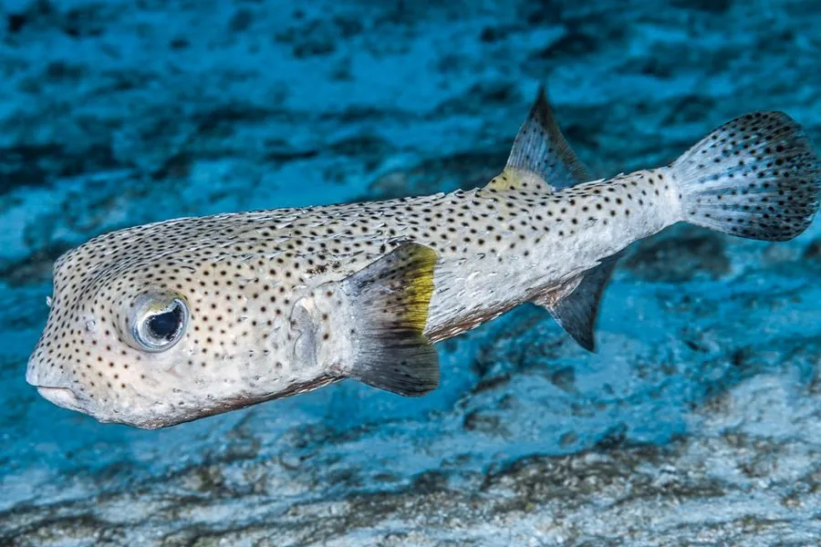

鱼类 · 动物界
刺鲀 Diodon hystrix

全身长满尖刺的暖海鱼类，遇险时会吸水膨胀成球、竖起硬刺，牙齿愈合成喙状，能咬碎贝壳和海胆。
- 分类
- 门脊索动物门纲辐鳍鱼纲目鲀形目科刺鲀科属刺鲀属
- 栖息环境
- 热带和亚热带珊瑚礁、岩礁和海草床
- 地理分布
- 全球热带和亚热带海域，包括太平洋、大西洋和印度洋
- 保护级别
- IUCN 无危（LC）；中国未列入国家重点保护野生动物名录
物种志
刺鲀体呈卵圆形，皮肤上布满由鳞片特化成的长刺，平时刺伏贴在体表，遇到危险时它会吞水或空气，把身体膨胀成球，让尖刺竖立起来。体色多为黄褐、灰褐或黑色，身上常有深色斑点。成鱼体长一般 30–60 cm，最大可达 90 cm。
刺鲀分布于全球热带和亚热带海域，栖息在珊瑚礁、岩礁和海草床，多单独活动，夜间捕食。它的上下颌牙齿愈合成坚硬的喙，能咬碎海胆、贝类、螃蟹和珊瑚，也会吃小鱼。刺鲀体内含有河豚毒素，皮肤和内脏毒性较强。由于外形奇特，它常被作为观赏鱼，但需要专业人员饲养。目前 IUCN 评估为无危，中国未将其列入国家重点保护野生动物名录。
形态与习性
- 食性海胆、贝类、螃蟹、珊瑚和小鱼
- 体长一般 30–60 cm，最大可达 90 cm
- 防御吞水或空气膨胀成球，竖起全身尖刺
- 牙齿上下颌牙齿愈合成坚硬的喙
- 毒性体内含河豚毒素，皮肤和内脏毒性较强
- 活动节律多单独活动，夜间捕食
趣味知识
- 刺鲀遇险时会吞水膨胀成球，让全身尖刺竖起。
- 它的牙齿愈合成喙状，能咬碎海胆和贝壳。
- 刺鲀体内含有河豚毒素，不能随意食用。